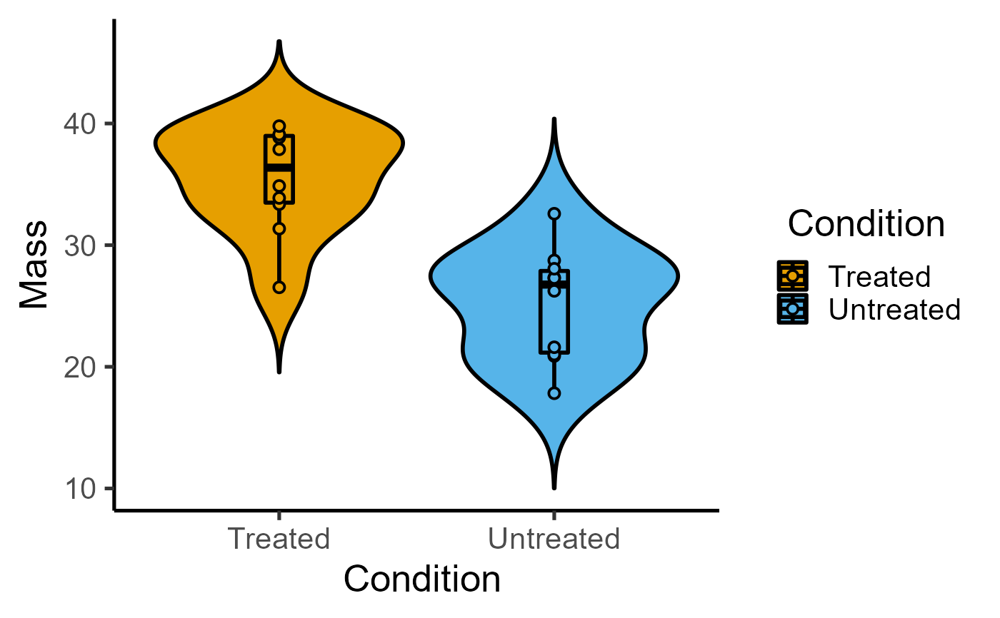

R/plot_scatterviolin.R
plot_scatterviolin.RdThis function takes a data table, X and Y variables, and plots a graph with a scatter plot and violinplot using ggplot.
plot_scatterviolin( data, xcol, ycol, symsize = 2.5, symthick = 1, jitter = 0, trim = T, scale = "area", fontsize = 20, v_alpha = 1, s_alpha = 1, ColPal = "all_grafify", ColRev = F, TextXAngle = 0 )
| data | a data table object, e.g. data.frame or tibble |
|---|---|
| xcol | name of the column to plot on X axis. This should be a categorical variable. |
| ycol | name of the column to plot on quantitative Y axis. This should be a quantitative variable. |
| symsize | size of dots relative to |
| symthick | thickness of dot border ( |
| jitter | extent of jitter (scatter) of symbols, default is 0 (i.e. aligned symbols). To reduce symbol overlap, try 0.1-0.3 or higher. |
| trim | set whether tips of violin plot should be trimmed at high/low data. Default |
| scale | set to "area" by default, can be changed to "count" or "width". |
| fontsize | parameter of |
| v_alpha | fractional opacity of violins, default set to 1 (i.e. maximum opacity & zero transparency) |
| s_alpha | fractional opacity of symbols, default set to 1 (i.e. maximum opacity & zero transparency) |
| ColPal | grafify colour palette to apply, default "all_grafify"; alternatives: "okabe_ito", "bright", "pale", "vibrant", "contrast", "muted" "dark", "light". |
| ColRev | whether to reverse order of colour choice, default F (FALSE); can be set to T (TRUE) |
| TextXAngle | orientation of text on X-axis; default 0 degrees. Change to 45 or 90 to remove overlapping text |
This function returns a ggplot2 object on which additional geometries etc. can be added.
The function uses geom_violin and geom_point geometries.
Note that the geom_violin options are set as follows: scale = "area", draw_quantiles = c(0.25, .5, .75). The trim = T set by default can be changed when calling the function.
The X variable is mapped to the fill aesthetic in both violin and symbols, and its colour can be changed using ColPal option. The size of symbols can be adjusted using symsize set to 1 by default.
Transparency of violins and symbols can be set independently with v_alpha and s_alpha, respectively.
Three types of plots are available for scatter/jitter symbols and either bars+SD, boxplot or violin plots: plot_scatterbar_sd, plot_scatterbox and plot_scatterviolin.
These are related to the three "dot" versions that use a different geometry for symbols: plot_dotbox, plot_dotbar_sd and plot_dotviolin.
#plot without jitter plot_scatterviolin(data_t_pdiff, Condition, Mass, symsize = 2, trim = FALSE)#with jitter plot_scatterviolin(data_t_pdiff, Condition, Mass, symsize = 2, trim = FALSE, jitter = 0.1)